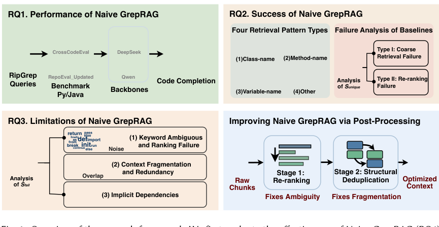
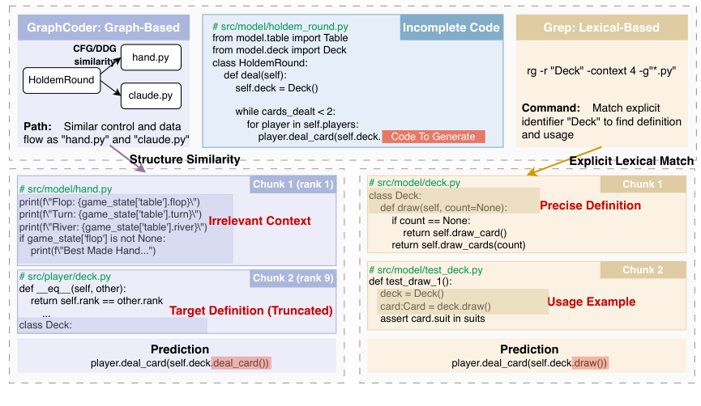
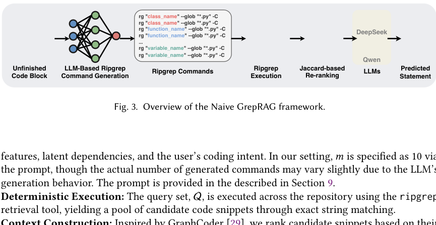

先给结论：标识符就是代码的高密度索引
Grep 检索约 0.40 秒。
约 754K LOC 仍可快速定位。
GrepRAG 超过最佳基线。
为什么复杂检索不一定更适合代码
代码补全经常需要跨文件依赖：当前文件只有 self.deck.draw()，真正的类定义可能位于另一个目录。BM25、向量检索和代码图都能解决问题，但需要建立和维护索引；仓库一改，索引就可能过期。
先预处理，再检索；覆盖广但维护成本高。
从上下文抽取标识符，直接扫描最新文件。
获得定义、调用点和示例后生成代码。
论文指出，大仓库中的索引构建成本还没有计入传统方法的检索延迟。

图 1：研究框架——从 Naive GrepRAG 评估到 GrepRAG 后处理（原论文第 3 页）。
让模型生成 rg 查询
Naive GrepRAG 让 LLM 根据光标前的上下文生成多条查询，然后确定性地执行 ripgrep，用 Jaccard 相似度排序候选片段，拼接 Top-K 上下文。

图 2：Grep 直接定位定义与使用示例，而图检索可能返回噪声片段（原论文第 5 页）。
在论文案例中，Grep 直接找到 class Deck 的定义、draw 方法和实际调用；图检索反而可能先返回名字相似但逻辑无关的文件。代码标识符同时承担了命名和连接依赖的作用。
Naive GrepRAG 的三个问题
init、run、data 会产生大量噪声，普通 Jaccard 不区分类名和通用词。
相邻命中的上下文区间重叠，直接拼接浪费窗口。
固定 -C 边界可能把完整函数和代码流切断。
两个后处理，让 Grep 真正交付上下文
1. Identifier-weighted Re-ranking
给类名、方法名、变量名等显式标识符更高权重，降低 for、return 等普通词的影响。排序目标从“命中了多少词”变成“命中了多少有用实体”。
2. Structure-aware Deduplication
根据文件路径、起止行号和区间重叠关系合并片段，避免重复并恢复函数上下文。不需要完整 AST 或依赖图，就能修复 Grep 截断带来的碎片化。
把智能放在“查询意图和结果整理”上，把文件扫描交给低延迟、确定性的工具。
速度、效果和新鲜度同时成立
| 方案 | 索引/图构建 | 代码变化后的新鲜度 | 特点 |
|---|---|---|---|
| NoRAG | 无 | 高 | 没有跨文件上下文 |
| VanillaRAG | BM25 索引 | 需更新 | 传统词法排序 |
| GraphCoder | 静态代码图 | 需重建 | 结构依赖建模 |
| GrepRAG | 无 | 实时 | 加权排序 + 结构去重 |

图 3：Naive GrepRAG 的查询生成、执行和上下文构建流程（原论文第 7 页）。
作者在 CrossCodeEval 和 RepoEval_Updated 上测试 Python、Java 以及跨文件补全任务。Naive GrepRAG 已达到复杂方法相当甚至更好的结果，GrepRAG 在此基础上继续提高 exact match。
对你的 Grep-first 知识库，最值得迁移的是什么
法律和政策文本同样具有高密度标识符，只是类名换成了法规名、条款号、机构名和业务名：
法规名、条款号、业务实体和同义表达。
对 JSONL、Markdown 和纯文本精确匹配。
加权排序、按文档合并、去重并保留行号。
法规名、条款号、业务名称。
缴存义务、投诉、补缴、强制执行。
单位、员工、情况、问题等泛化词。
最终判断：不要只记录“命中了哪些文件”，还要记录“为什么这个命中更重要”以及“相邻命中是否应该合并”。这正是从 Naive GrepRAG 走向工程化 GrepRAG 的关键。